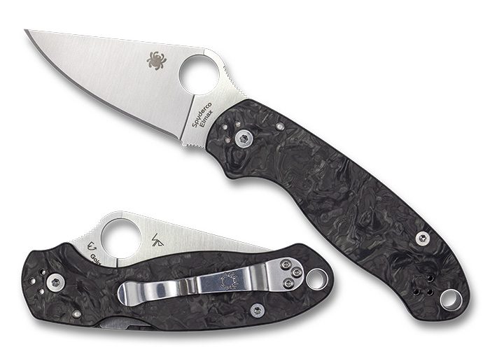

Hobbies
I'm an avid fan of video games, and I've been playing them since I was a kid. I've played games on a multitude of platforms, including the Playstation, Nintentdo, and predominantly the PC. I've played a wide variety of games, including MMORPGs, FPSs, and RTSs. I've also played a lot of World of Warcraft, and I play a lot of the Sid Meier's Civilization series, and have put in hundreds of hours into both.

I very much enjoy collecting things, and I've been doing it since I was a kid. I've collected mainly a lot of tools, and I've amassed a large collection of them. Most of them are hand tools, such as pocket knives, multitools, and so on. I've also collected a lot of other things, such as cool looking rocks, and I've even collected a few coins. I very much enjoy my knife collection the most, and even though I've been collecting them for a long time, I still enjoy adding to it. Some people might find it strange that I collect knives, but I find it very interesting, and I enjoy the variety of knives that are out there.
Below is the picture of my current favorite in my collection, a Spyderco Para 3 in Carbon Fiber. I very much enjoy cooking, and I pride myself in my ability to cook. I've been cooking for the past few years, and I predominantly enjoy cooking steaks. I've cooked a lot of different types of steaks, and I've come to find a lot of hidden cuts out there with my favorite being a brazilian cut called Picanha. I've cooked them on a variety of different methods, including the grill, the oven, and the stove, however I've found that cooking them using a sous vide machine is the best way to cook them. Make sure to cook them to your preference, and finish them off on a nice cast iron to get that nice crust on them.